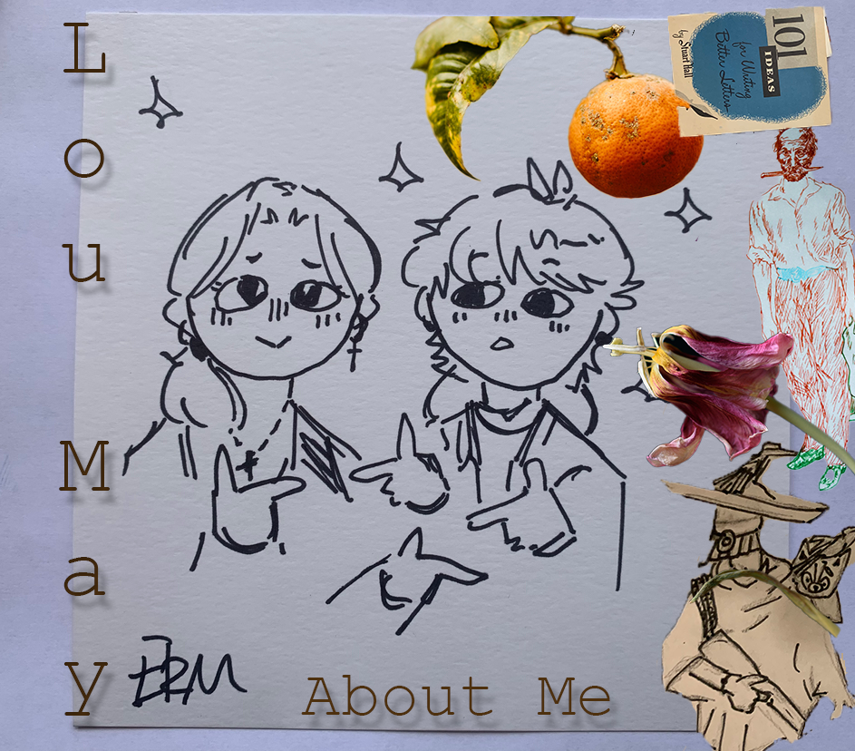

Howdy! I am Lou May, a Junior at Skyline High School, I love RPG, F1, Poetry, and Good Omens.
About Me | 2023
Published Works | A Week of Mourning | Satorian 2022-23
You don’t know me I soon won’t know you Did I at least leave you with a feeling of love Or was it one of passiveness I suppose it doesn’t matter Regrets are for the living Those who can remember what to regret Grief, denial, bargaining, anger, acceptance Your still alive Your heart beats, lungs pump, nerves fire Peak physical health In a week you’ll be dead That I must accept Grief, denial, bargaining, anger Your still alive You don’t see my face, I won’t see yours Hospice In week your brain will be nothing I’ll still scream at night Grief, denial, bargaining Your still alive Your eyes are still open, your arms still work I could hug you one last time In a week I won’t even touch your corpse I hope for one last meeting Grief, denial Your still alive You walk, your talk, you feel That’s alive Dementia is just a word In a week you’ll walk without falling I know Grief Your still alive You aren’t here, you don’t see That isn’t life You haven’t been here for a while, I haven’t truly touched you in years And for that realization I mourn Sleep peacefully, don’t starve till I can go for sandwiches again